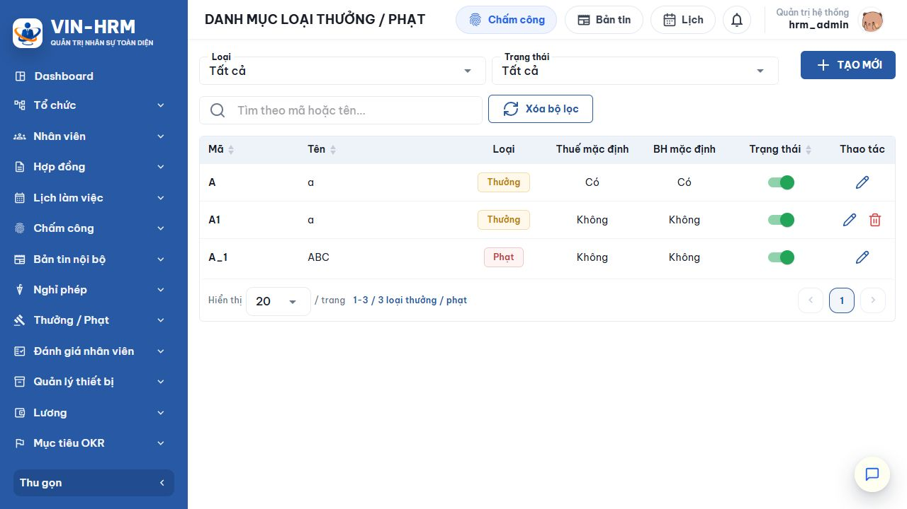
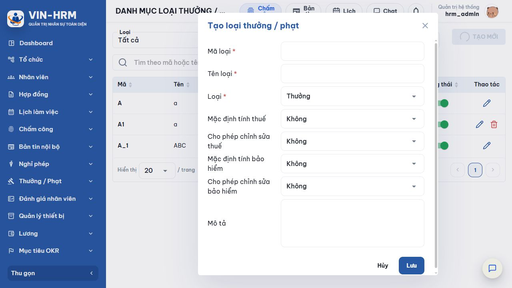

1. Mục đích và phạm vi
Loại thưởng/phạt là danh mục dùng khi lập đề nghị điều chỉnh thu nhập. Loại quyết định khoản tiền là cộng thêm hay khấu trừ; bốn cờ thuế và bảo hiểm cung cấp giá trị mặc định và quyền sửa cho từng dòng nhân viên trong đề nghị.
2. Truy cập
Mở Thưởng / Phạt → Loại thưởng phạt. Chức năng cần quyền cấu hình.

3. Bộ lọc và cột dữ liệu
| Thành phần | Ý nghĩa |
|---|---|
| Loại | Tất cả, Thưởng hoặc Phạt. |
| Trạng thái | Tất cả, Đang áp dụng hoặc Ngừng áp dụng. |
| Tìm theo mã hoặc tên | Tìm nhanh bản ghi. |
| Thuế mặc định | Giá trị Có/Không tự điền vào dòng chi tiết đề nghị. |
| BH mặc định | Giá trị Có/Không tự điền cho bảo hiểm. |
| Công tắc | Đổi trạng thái để cho phép hoặc ngừng sử dụng mới. |
| Bút chì/Thùng rác | Sửa hoặc xóa khi đủ điều kiện. |
4. Tạo loại thưởng/phạt

- Chọn Tạo mới.
- Nhập mã và tên loại.
- Chọn Thưởng hoặc Phạt.
- Thiết lập hai cặp: giá trị mặc định và quyền chỉnh sửa cho Thuế, Bảo hiểm.
- Nhập mô tả để người lập đề nghị hiểu trường hợp sử dụng.
- Chọn Lưu; bản ghi mới mặc định Đang áp dụng.
| Trường/Lựa chọn | Giải thích |
|---|---|
| Mã loại | Bắt buộc, tối đa 50 ký tự, chuẩn hóa chữ in hoa và duy nhất trong doanh nghiệp. |
| Tên loại | Bắt buộc, tối đa 255 ký tự. |
| Thưởng | Khoản thu nhập cộng thêm cho nhân viên. |
| Phạt | Khoản khấu trừ khỏi thu nhập của nhân viên. |
| Mặc định tính thuế | Giá trị Có/Không được sao chép vào từng dòng nhân viên khi chọn loại. |
| Cho phép chỉnh sửa thuế | Có: người lập đề nghị có thể đổi cờ thuế; Không: cờ bị khóa theo mặc định. |
| Mặc định tính bảo hiểm | Giá trị Có/Không được sao chép vào dòng nhân viên. |
| Cho phép chỉnh sửa bảo hiểm | Có: người lập đề nghị có thể đổi; Không: cờ bị khóa. |
| Mô tả | Không bắt buộc, tối đa 1.000 ký tự; nên nêu điều kiện và ví dụ sử dụng. |
Bốn tổ hợp cho mỗi cờ thuế/bảo hiểm
| Mặc định | Cho sửa | Kết quả trong đề nghị |
|---|---|---|
| Không | Không | Luôn là Không; người lập không đổi được. |
| Có | Không | Luôn là Có; người lập không đổi được. |
| Không | Có | Ban đầu là Không nhưng có thể bật Có. |
| Có | Có | Ban đầu là Có nhưng có thể chuyển Không. |
| Ý nghĩa của “Cho phép chỉnh sửa” Lựa chọn này không tự xác định nghĩa vụ thuế hoặc bảo hiểm. Nó chỉ quyết định người lập đề nghị có được thay đổi giá trị mặc định trên từng nhân viên hay không. Chính sách nên được phê duyệt trước khi mở quyền sửa. |
5. Dòng chảy nghiệp vụ sau khi cấu hình
- Người dùng lập Đề nghị thưởng phạt, chọn loại và danh sách nhân viên.
- Hệ thống sao chép cờ thuế/bảo hiểm mặc định; chỉ mở ô chọn nếu loại cho phép sửa.
- Đề nghị được gửi qua quy trình phê duyệt đã chọn.
- Khi duyệt hoàn tất, hệ thống sinh giao dịch thưởng/phạt cho từng nhân viên.
- Thanh toán ngay được đánh dấu đã chi; thanh toán qua lương chờ đưa vào kỳ lương.
| Cấu hình liên quan Danh mục loại không dùng khóa trực tiếp tại Hệ thống → Cấu hình. Tuy nhiên Đề nghị thưởng/phạt bắt buộc dùng một quy trình còn hiệu lực tại Hệ thống → Quy trình phê duyệt, đúng loại quy trình phê duyệt thưởng/phạt. |
6. Sửa, đổi trạng thái và xóa
| Thao tác | Cách thực hiện và lưu ý |
|---|---|
| Sửa | Chọn bút chì; có thể cập nhật mã, tên, loại, bốn cờ, mô tả và trạng thái. Mã mới vẫn phải duy nhất. |
| Ngừng áp dụng | Tắt công tắc để không dùng cho phát sinh mới nhưng vẫn giữ lịch sử đề nghị và giao dịch. |
| Kích hoạt lại | Bật công tắc khi chính sách tiếp tục được sử dụng. |
| Xóa | Chỉ xóa loại chưa phát sinh Đề nghị hoặc giao dịch. Nếu đã dùng, hệ thống chặn xóa và yêu cầu Ngừng áp dụng. |
7. Lỗi thường gặp
| Thông báo/Hiện tượng | Cách xử lý |
|---|---|
| Mã loại đã tồn tại | Tìm bản ghi cùng mã hoặc nhập mã khác. |
| Không thể xóa vì đã phát sinh dữ liệu | Chuyển sang Ngừng áp dụng. |
| Không sửa được cờ thuế/bảo hiểm trong đề nghị | Loại đang chọn đặt Cho phép chỉnh sửa = Không; quản trị viên cần đánh giá chính sách trước khi thay đổi. |
| Giá trị mặc định không như mong muốn | Mở loại đang áp dụng, kiểm tra hai trường Mặc định; đổi loại trên đề nghị sẽ đặt lại cờ theo loại mới. |
| Không gửi được đề nghị vì quy trình không hợp lệ | Kiểm tra quy trình phê duyệt, bước duyệt và người/phòng ban/chức vụ duyệt còn hoạt động. |
8. Danh sách kiểm tra
- Mã loại duy nhất.
- Thưởng/Phạt đúng bản chất.
- Mặc định thuế đã duyệt.
- Quyền sửa thuế phù hợp.
- Mặc định bảo hiểm đã duyệt.
- Quyền sửa bảo hiểm phù hợp.
- Quy trình duyệt đang hoạt động.
- Đã thử một đề nghị mẫu.